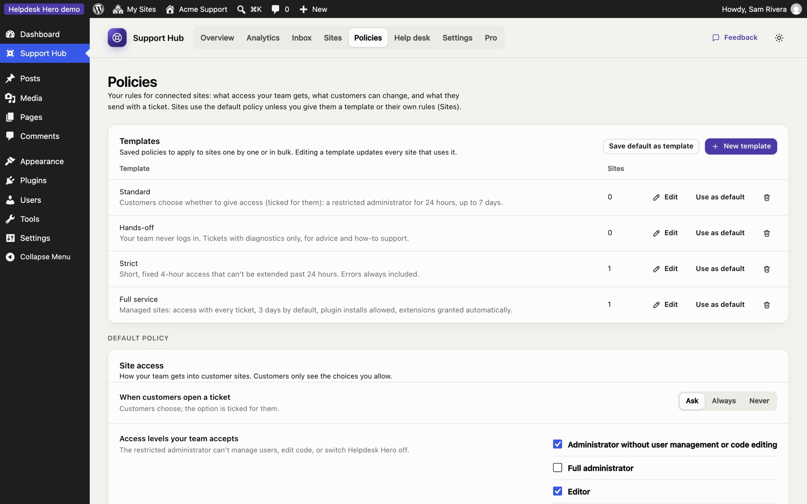
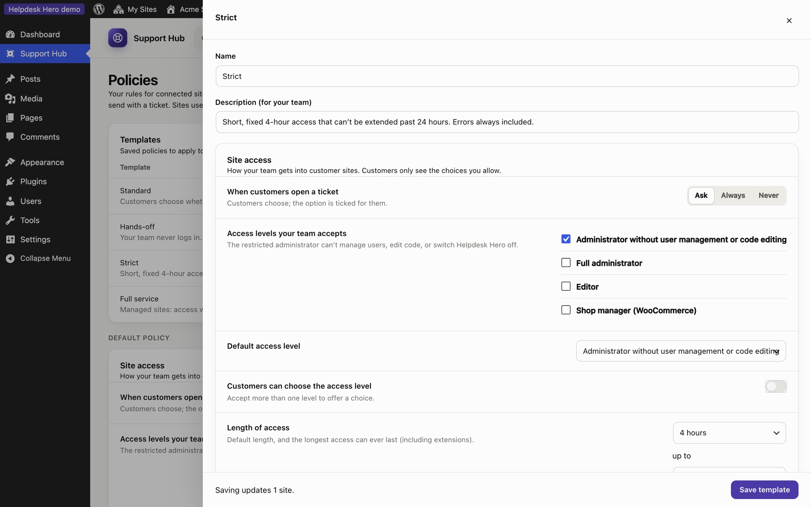

Policies and templates
Your support policy is the set of rules connected sites follow: what access your team gets, what customers can choose, and what a ticket includes. The customer plugin shows customers only the options your policy allows, and both sites enforce it.

Every site uses one of:
- your default policy, the starting point for new sites;
- a template, shared by many sites (edit the template and every site using it updates);
- custom rules for that site only (set in the site's panel under Sites).
Templates#
The hub starts with four templates you can edit, copy or delete:
| Template | For |
|---|---|
| Standard | Customers choose whether to give access, for up to a week |
| Hands-off | No site access, tickets and diagnostics only |
| Strict | Short access (4 hours, up to 24), more diagnostics required, customers can't change the duration |
| Full service | Access comes with every ticket, for care plans and managed sites |
Click New template or Save default as template to make your own. Deleting a template moves its sites back to your default policy.

Site access#
| Setting | What it does |
|---|---|
| Access mode | Customers choose (the option is ticked for them), Always (access comes with every ticket) or Never |
| Access levels your team accepts | The roles customers may give you. The default is an administrator who can't manage users or edit code |
| Customers can choose the access level | Otherwise your default role is always used |
| Default and maximum length | How long access lasts, and the most a customer can choose |
| Customers can choose the length | Otherwise your default duration is always used |
| Plugin installs | Whether the support account may install new plugins |
| More time when your team asks | Customers approve your requests, or they're granted automatically up to the maximum |
| Customers can extend access themselves | Lets customers add time themselves |
| Log the pages your team visits | Record every page your team views, not only changes |
| Troubleshooting mode | Let your team switch plugins off for their own session |
| End access when the ticket closes | Recommended |
Tickets#
| Setting | What it does |
|---|---|
| Customers can reply from their dashboard | Otherwise they read your replies there and contact you another way |
| Customers can close and reopen tickets | Shows Mark as solved |
| Ask for a priority | Low, Normal, High, Urgent |
| Categories | The categories customers choose from (they also power your statistics) |
| Note on the New ticket screen | A short message at the top of the New ticket form, such as your opening hours |
| Support email | Lets customers email a ticket themselves when needed. Leave empty to turn this off |
| Writing assistant | The customer's optional AI helper for describing a problem |
| Ask customers to rate support (Pro) | Ask for a rating when a ticket is closed or access ends |
Site details sent with tickets#
For each section (environment, plugins and theme, errors, recent changes, debug log) choose Required, Ticked (on, but the customer may untick it), Unticked or Never. The customer always sees what will be sent before it goes.
Still stuck? Check Troubleshooting and the FAQ, or ask on GitHub. You can also try everything in the live demo.